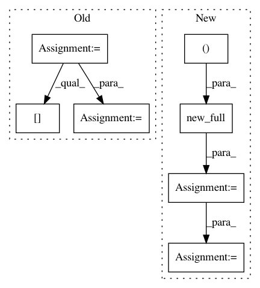

7b8716403efd3cee3fd62f50d2e2e4b2183a90b6,torch_geometric/nn/functional/cheb_conv.py,,cheb_conv,#Any#Any#Any#Any#Any#,7
Before Change
edge_attr = x.data.new(e).fill_(1)
// Compute degree.
degree = x.data.new(n).fill_(0).scatter_add_(0, row, edge_attr)
degree = degree.pow_(-0.5)
// Compute normalized and rescaled Laplacian.
edge_attr *= degree[row]
edge_attr *= degree[col]
lap = SparseTensor(edge_index, -edge_attr, torch.Size([n, n]))
// Convolution.
Tx_0 = x
output = torch.mm(Tx_0, weight[0])
After Change
row, col = edge_index
n, e, K = x.size(0), row.size(0), weight.size(0)
edge_attr = x.new_full((e, ), 1) if edge_attr is None else edge_attr
deg = degree(row, n, dtype=edge_attr.dtype, device=edge_attr.device)
// Compute normalized and rescaled Laplacian.
deg.pow_(-0.5)
lap = -deg[row] * edge_attr * deg[col]
// Convolution.
Tx_0 = x
out = torch.mm(Tx_0, weight[0])
In pattern: SUPERPATTERN
Frequency: 3
Non-data size: 7
Instances
Project Name: rusty1s/pytorch_geometric
Commit Name: 7b8716403efd3cee3fd62f50d2e2e4b2183a90b6
Time: 2018-04-30
Author: matthias.fey@tu-dortmund.de
File Name: torch_geometric/nn/functional/cheb_conv.py
Class Name:
Method Name: cheb_conv
Project Name: rusty1s/pytorch_geometric
Commit Name: 653be87728a9420fbd980d0d6024451c892ef721
Time: 2019-01-28
Author: matthias.fey@tu-dortmund.de
File Name: torch_geometric/nn/glob/sort.py
Class Name:
Method Name: global_sort_pool
Project Name: uber/pyro
Commit Name: d7148f390db12a3f7e4b43ab584648b2e4a1882d
Time: 2020-11-07
Author: fritz.obermeyer@gmail.com
File Name: pyro/distributions/spanning_tree.py
Class Name: SpanningTree
Method Name: log_partition_function